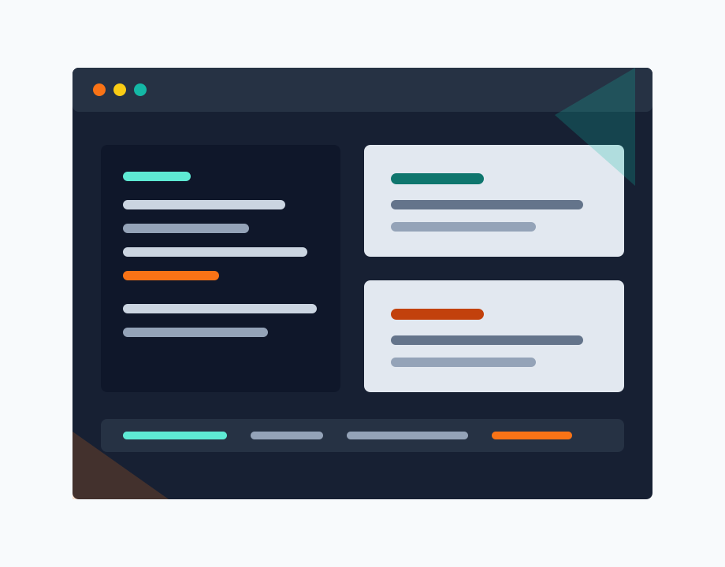

프로젝트 A
사용자 문제를 해결하기 위해 설계한 웹 애플리케이션입니다. 요구사항 정리부터 UI 구현, 배포까지 담당했습니다.
- 역할: 프론트엔드 개발 및 UI 설계
- 기술: React, TypeScript, REST API
- 성과: 핵심 플로우 사용성 개선
Software Developer Portfolio
사용자 이름은 웹 서비스와 인터페이스를 설계하고 구현하는 개발자입니다. 명확한 사용자 흐름, 안정적인 코드, 협업하기 쉬운 문서를 중요하게 생각합니다.

About
복잡한 요구사항을 작은 단위로 정리하고, 빠르게 검증 가능한 형태로 구현하는 데 강점이 있습니다. 제품의 맥락을 이해한 뒤 API, UI, 문서가 같은 방향을 바라보도록 다듬습니다.
최근에는 접근성, 성능, 테스트 가능한 구조에 관심을 두고 있습니다. 사용자가 자연스럽게 이해하고, 팀이 안정적으로 확장할 수 있는 서비스를 만드는 일을 좋아합니다.
Skills
제품 구현에 필요한 화면, 데이터 흐름, 협업 도구를 균형 있게 다룹니다.
Projects
문제 정의부터 구현과 배포까지 이어지는 과정을 중심으로 정리한 프로젝트입니다.
사용자 문제를 해결하기 위해 설계한 웹 애플리케이션입니다. 요구사항 정리부터 UI 구현, 배포까지 담당했습니다.
데이터를 빠르게 파악할 수 있도록 만든 대시보드입니다. 정보 구조와 상태 표현을 중심으로 화면을 구성했습니다.
안정적인 데이터 흐름을 위한 API 서버 프로젝트입니다. 인증, 데이터 모델링, 예외 처리를 중심으로 구현했습니다.
Highlights
기획 의도를 화면 구조로 옮기고, 핵심 사용 흐름을 단순하게 정리했습니다.
API, 컴포넌트 사용법, 배포 과정을 문서화해 팀원이 빠르게 이해할 수 있게 했습니다.
웹 접근성, 성능, 테스트 자동화처럼 제품 품질에 직접 연결되는 주제를 꾸준히 학습합니다.
Contact
새로운 문제를 함께 정의하고, 작게 검증하며, 꾸준히 개선하는 일을 기다리고 있습니다.